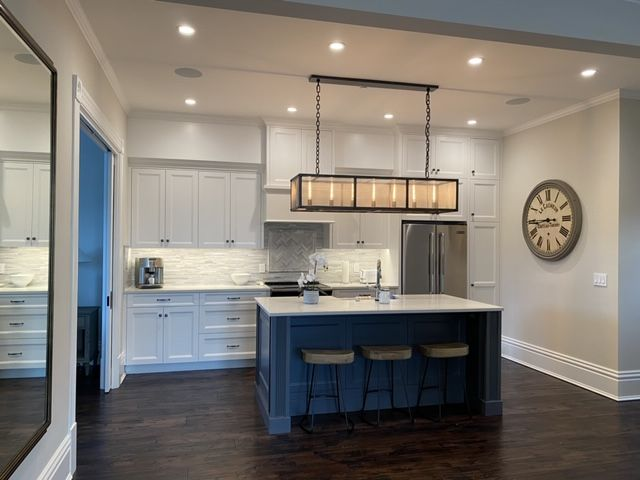
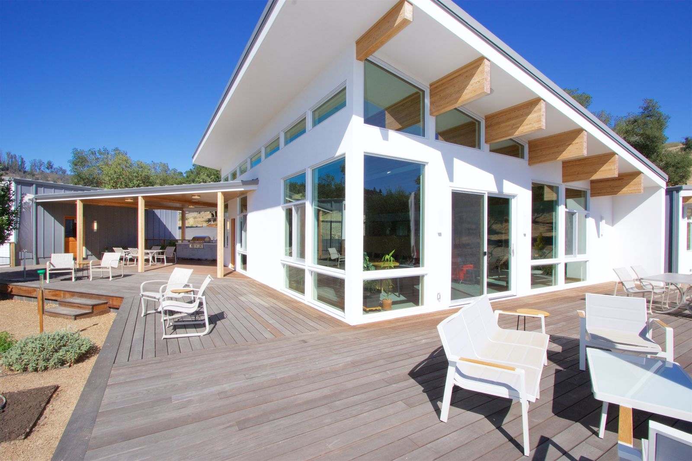
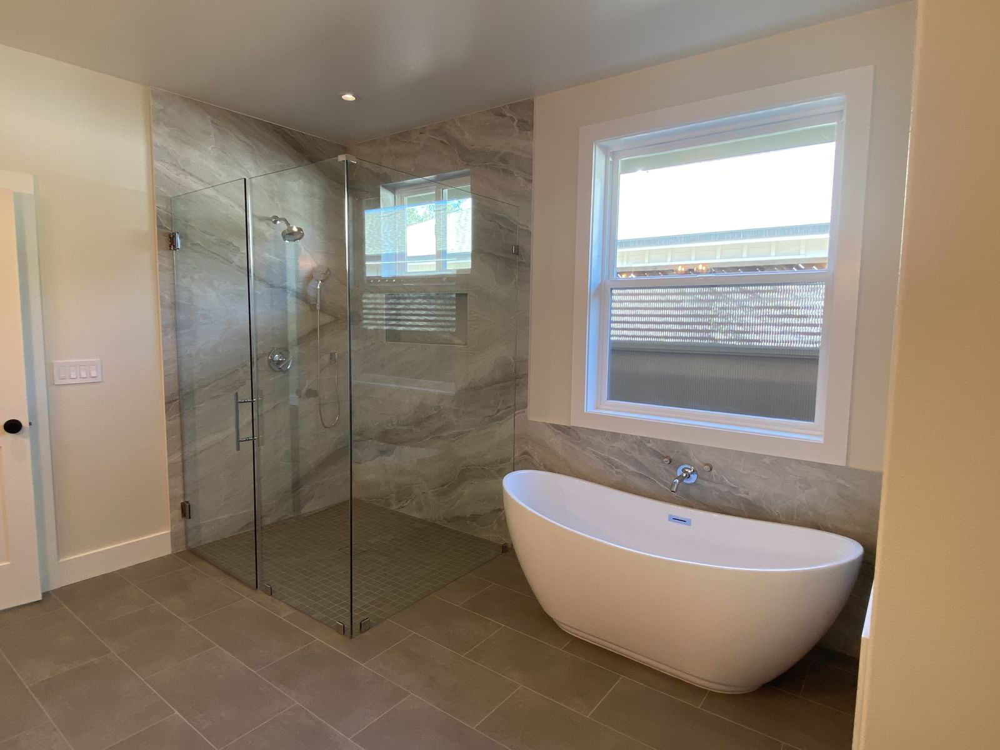

From Novato's family neighborhoods to Mill Valley's wooded hillsides, Howard Construction brings twenty-five years of North Bay craftsmanship south into Marin — with the same accountability Phil delivers everywhere else.
Marin County sits squarely inside Howard Construction's home territory — a straight run down 101 from our Santa Rosa headquarters puts us in Novato in twenty minutes and San Rafael shortly after. We've served San Francisco and Marin homeowners alongside our Sonoma and Napa work for years, and the county's mix of housing rewards exactly the experience we bring: mid-century Eichler-era homes with radiant slabs and post-and-beam framing, brown-shingle hillside houses under the redwoods in Mill Valley and Larkspur, and postwar ranch neighborhoods across Novato and Terra Linda.
Marin construction has two defining physical realities. The first is hillside work: steep lots, engineered foundations, drainage that has to be right the first time, and access logistics on narrow canyon roads. The second is fire: much of Mill Valley, Fairfax, San Anselmo, and the Mount Tamalpais corridor sits in designated wildland-urban interface, where ignition-resistant construction under Chapter 7A is code and common sense alike. We build and retrofit for both — the same discipline we apply on Howell Mountain and in Calistoga.
Add the strongest ADU economics in the Bay Area — Marin rents make backyard cottages and garage conversions pay for themselves faster here than almost anywhere — and Marin is a county where a seasoned, honest contractor earns his keep. That's the job we show up to do.
A dozen towns, a dozen permit counters, steep lots and WUI hillsides — Marin rewards contractors who've done this for decades.
Each incorporated town — San Rafael, Novato, Mill Valley, Larkspur, San Anselmo and the rest — runs its own building department, while unincorporated areas go through the Marin County Community Development Agency. We handle whichever counter your parcel answers to, with complete submittals that move.
Marin's slopes demand engineered foundations, retaining structures, and drainage design that respects both geology and the neighbors downhill. We scope geotech, grading, and erosion control up front so the budget is honest from day one.
State ADU law applies across every Marin jurisdiction, and county programs actively encourage backyard units. With Marin rental rates, a well-built ADU is one of the strongest returns in Bay Area construction — we run the numbers with you before design begins.
Kitchen, bathroom, and whole-home renovations built around your daily life — including phased work while you live in the home.
Primary suites, second stories, great rooms, and in-law wings engineered to match the existing structure seamlessly.
Detached ADUs, garage conversions, and junior ADUs handled end-to-end: feasibility, plans, permits, and build.
Outdoor kitchens, covered rooms, pool decks, and entertaining spaces built for wine-country indoor-outdoor living.
Engineered decks, pergolas, and shade structures — including ignition-resistant assemblies for WUI parcels.
Detached garages, shops, barns, and carriage houses with finished living space above.
A sample from our project gallery — real jobs, from framing to finish.



Yes — Novato is about twenty minutes down 101 from our headquarters, closer than parts of Napa County we've served since 2000. Marin and San Francisco have been part of our stated service area for years; the county page you're reading just makes it official.
Yes. Eichler-era construction — radiant heat in slabs, post-and-beam roofs, wall-to-wall glass — punishes contractors who treat it like conventional framing. We plan around the slab, respect the architecture, and upgrade systems without flattening the character.
Large parts of Mill Valley, San Anselmo, Fairfax, Kentfield, and the Mount Tam corridor carry WUI or high fire-hazard designations that shape what new work must include. We'll pull your parcel's designation at a free consultation and price ignition-resistant scope as standard, not as an upsell.
Slope drives cost through foundations, retaining, drainage, and access — a hillside addition can run meaningfully above a flat-lot equivalent. The honest answer comes from a site visit, which is free; the expensive answer comes from a contractor who guesses flat-lot numbers and change-orders you later.
Philip Howard personally reviews every inquiry and walks every site. One call gets you a straight answer on feasibility, timeline, and budget — no pressure, no runaround.
Request Your Free Estimate